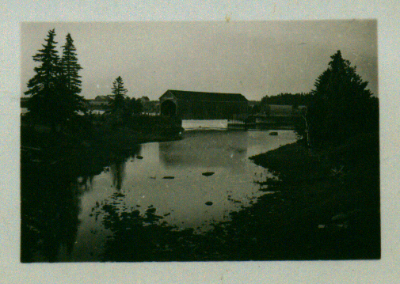

The Family Chronicle
No.46 May 10, 2003
________________
Follow-up
Following the last Newsletter, I received a note from Art and Enid Mills. Enid remembered her grandfather having sheep and getting yarn in return for the wool.
Art sent me a statement of account sent to his father, Jasper Mills, by my father, Elmer Glendenning, for 1930 with the Black River Agricultural Society No. 103 Dr. and Co-0perative Association. (I am not sure what the Dr. stands for.)”The statement dated Sept. 16th 1930 had the following entries:
Jan 1 Credit in Book $ 1.20
Fee for 1930 $ 1.00
Mar 20 ½ ton fertilizer $14.45
By cash $14.45
May I ton grain fertilizer $18.15
By cash $18.00
June 30 # timothy seed $ 3.60
9 # red clover $ 2.25
6 # alsike clover $ 1.38
½ # turnip seed $ .25
rebate on fertilizer $ 2.35
____________________________________
$41.08
$36.00
Balance due $5.08
Paid by registering letter $5.10
on Sept. 24/30
As a follow-up, I checked 2003 prices of these items in PEI. Fertilizer, depending on the mix, is from $125-$300 per ton; timothy seed $1.17 lb; red clover $1.65 lb; and alsike clover is $1.31 lb.
Lime and Fertilizer
At first, fertilizer and lime came in bulk; later one had a choice of bulk or bagged with the latter being more expensive. One bought so many pounds of each component - potash, phosphate, nitrogen, etc according whether it was for grain or gardens. I can remember mixing fertilizer on the concrete barn floor. The mix, perhaps a half ton or even a ton, was piled on the floor then two men with shovels would methodically shovel the old pile into a new pile two or three times. There was a technique to it.
Each farmer ordered in advance; then word would come that the lime or fertilizer was at the station. I remember just prior to WW2, Walter, John, Ken and Norm leaving with the horses and wagons for Loggieville to unload lime. Farmers would come with their horses for their order; the men would shovel the lime or fertilizer on to the individual wagons. Depending on how far you lived from Loggieville, you would make one or two trips per day. At the end of the day, the men would put on their own load and come home. Walter nearly always brought me peppermints whenever he was working at the lime.
Obviously this was a labour intensive operation. First the fertilizer was shoveled from boxcar to wagon, once at home, may have had to be shoveled off the wagon, shoveled two or three times to mix it and then bagged and taken to the field and dumped into the grain or potato seeder for spreading.

Little Branch Bridge taken from the Miller’s Bridge probably in 1950’s
I always plant 5-10 pounds of potatoes at my cottage – no more than I can use before moving back to town for the winter. Recently I had to deal with an infestation of potato bugs (the Colorado potato beetle)
First, I found a small container, put a bit of kerosene in the bottom and picked the bugs into it. Picking potato bugs at home when I was a youngster was not uncommon. I wasn’t wild about it but it was one of the chores to be done.
I remember also going to the Mac place with John to poison potato bugs. Ken remembers that event also; Norman was likely there also. This was done when the bugs were still quite small and always early in the morning (5-5:30 am or so) when there was heavy dew on the plants. The dew was necessary so that the powder would stick to the plants.
John would mix the poison. I’m not sure of the mix but think that it included lime (slaked or unslaked), “Paris Green” and maybe arsenic of lime. A corner was cut from a feedbag and 10 – 15 pounds of the mixture place in it. One took the bag in one’s hand and walked along each row giving the bag one shake over each plant. This left a layer of white powder, poison, on top of each plant. I do not ever remember having to go through the field a second time.
Loisanne took Norm, Jean and Eileen on an outing recently and found themselves at a small cemetery at Galloway near Rexton. They found many Glendinning/Glendenning headstones and many with familiar family names – John, Walter, James and William for example. They came from Dumfries shire in Scotland and came to Canada just after the turn of the century. In fact, one person was actually born at Glendinning. This is the area my Great Grandfather came from but I was not able to trace any family connection.
I am aware also of many Glendinnings/ Glendennings who came to Saint John, New Brunswick about the same time. Although I have copies of some family histories, again, I was not able to make a family connection.
Some of my early Scottish maps show Glendinning in Dumfriesshire but it has disappeared from later ones. In the mid-1800s the ruins of a castle could be found but I understand it has now completely disappeared. Glendinning was known for its antimony mines. So far, I have not been able to find any connection with my side of the Glendinning clan.
The Chronicle is an occasional newsletter published by Don Glendenning It is designed to share information about my family, community and the times in which I grew up. While every effort is made to be accurate, errors are likely to occur. Comments, enquiries and information may be sent to 62 Queen Elizabeth Drive, Charlottetown, PEI, C1A 3A9. Tel: 902-892-5859 Email: dglende @attglobal.net. Feel free to make and pass along copies of this newsletter.